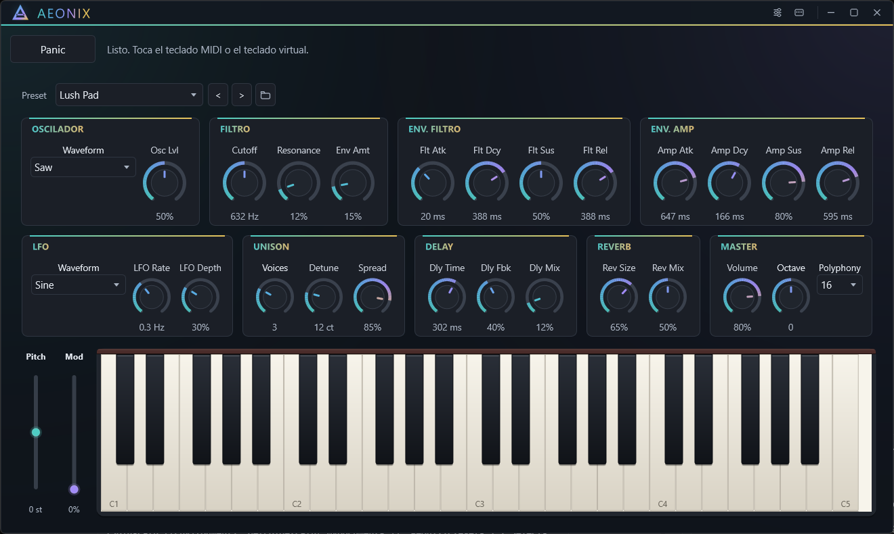

Subtractive engine
Oscillator, filter and envelopes form a clear chain. Tweak, listen and compare without opening dialogs.
Version 0.1.0 · Windows x64
Standalone subtractive synthesizer for Windows
One screen to shape your sound: 64 controls, factory and user presets, and a manager that finds what you need. No tabs, no hidden menus.
Free and open source · Windows 10 and 11 · x64 · 3.5 MB

Product
From oscillator to master without changing context. Every control earns its place.
Oscillator, filter and envelopes form a clear chain. Tweak, listen and compare without opening dialogs.
Each stage's controls live together, in signal order.
Built-in effects to add space without leaving the main surface.
Detuned voices to add body and width to the oscillator.
Play with the mouse or plug in a controller: the keyboard follows what you hear.
Search, filters, favorites and recent. Save, copy, rename and delete with confirmation, without losing your place.
Three text sizes, visible focus, Spanish and English, and documented minimum window sizes.
Screenshots
Real screenshots of AEONIX 0.1.0 on Windows. Click an image to enlarge it.
Themes
The theme doesn't change the layout, only the light. Pick one to preview.

Accessibility
The app scales text and layout separately so nothing gets clipped as it grows.
12, 15 and 18 px in Segoe UI. The layout follows the text with 1.00, 1.07 and 1.15 factors.
Each size declares its minimum height so no control falls outside the window.
Visible focus ring, main text above 15:1 and muted text above 8:1 on the background.
Spanish and English across the interface, including dialogs and the preset manager.
Actual app sizes. The site uses a more comfortable reading scale with the same family.
| Text | Minimum window |
|---|---|
| Normal | 1042 × 714 |
| Large | 1160 × 724 |
| Extra large | 1300 × 744 |
The window grows with the text; the minimum changes per level.
Download
Download the ZIP, extract it and run AEONIX.exe. No installer, no dependencies: the Visual C++ Redistributable is not required.
ZIP SHA256
CC66E59F85BE1383C3A11E3683AFE3ECC8C057D75053FC96163EB843250FCC68
AEONIX.exe SHA256
A2268B202A75B014305A6DE1EA27548F96591B1AF6318DB3ED78B304F4FDAC20
Check it in PowerShell: Get-FileHash AEONIX-0.1.0-win64.zip -Algorithm SHA256
The executable is not signed: SmartScreen may warn on first run. Check the SHA256 before running it.
Project
The repository includes the source, build instructions and the full license.
FAQ
Short, verifiable answers about AEONIX 0.1.0.
Yes. AEONIX is free and open source under AGPL-3.0. There is no paid tier, no account and no time limit.
No. Version 0.1.0 is a standalone Windows application. A plugin format is planned but not available yet.
Windows 10 and Windows 11, 64-bit only.
No. The executable links the C++ runtime statically, so no extra installation is required.
Yes. The full source is published on GitHub under AGPL-3.0, including build instructions.
Cinematic pads, atmospheric plucks and evolving textures. The factory presets are a starting point; every parameter is on a single screen.
Yes. AEONIX accepts MIDI input and also provides an on-screen keyboard, pitch wheel and modulation wheel.
The 0.1.0 executable is not code-signed, so Windows shows a warning the first time. Verify the SHA-256 published on the release page before running it.